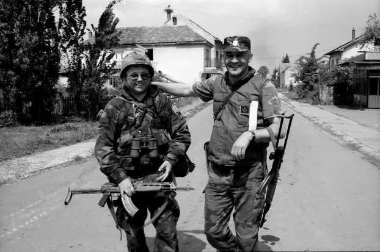
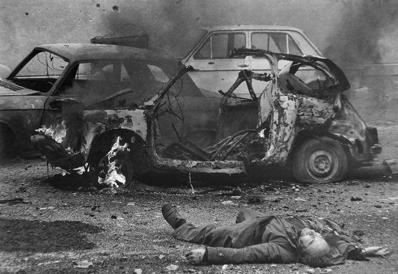
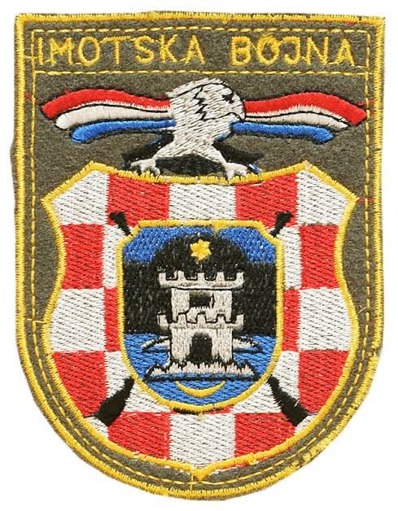
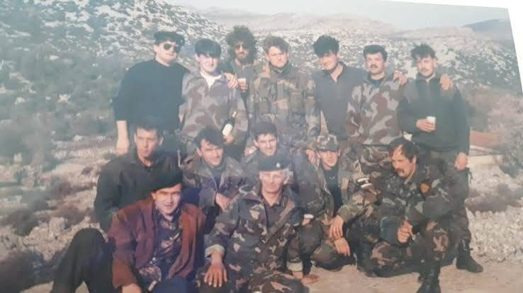
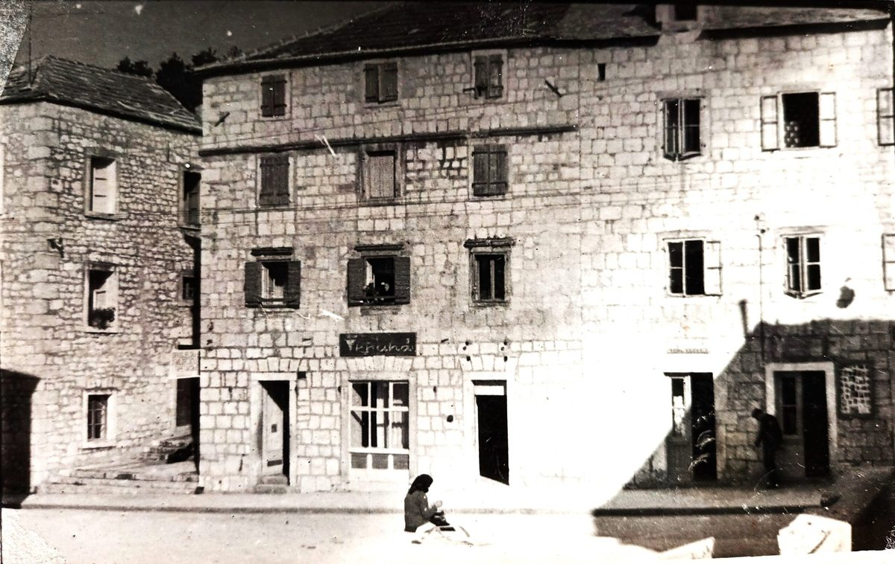

Tijekom demokratskih promjena 1990. godine, Imotska krajina pokazala je golem domoljubni zanos i odmah započela s pripremama za obranu od nadolazeće agresije. Zbog osjetljivog geopolitičkog položaja uz granicu s BiH i u zaleđu pobunjenog Knina, lokalno se stanovništvo brzo organiziralo kroz seoske straže i Narodnu zaštitu. Budući da Hrvatska u to vrijeme nije imala vlastitu vojsku, stotine imotskih mladića dragovoljno je stupilo u redove MUP-a kroz Tečaj za prvog hrvatskog redarstvenika. Među njima je bio i Josip Jović iz Aržana, koji je na Plitvicama u ožujku 1991. godine poginuo kao prva službena žrtva Domovinskog rata. Njegova herojska žrtva dodatno je ujedinila i motivirala Imoćane, stvorivši čvrst temelj za ubrzano formiranje legendarnih vojnih postrojbi u kasno proljeće 1991. godine.
Ključne postrojbe i ratni put
Treća imotska bojna ("Imotski sokolovi")
Utemeljena 1. lipnja 1991. godine u Kamenmostu u sastavu 4. gardijske brigade ZNG-a. Prošla je najteža ratišta, uključujući obranu Kruševa, Zadra (gdje su 5. listopada 1991. godine držali težak sjeverni sektor prema Musapstanu i Bokanjcu suprotstavljajući se Kninskom korpusu), Šibenika te operacije na Južnom bojištu (Golubov Kamen, Vlaštica) i operaciju Maslenica 1993. godine.
115. imotska brigada HV-a
Jedna je od najreprezentativnijih i najstabilnijih pričuvnih postrojbi Hrvatske vojske iz Dalmacije. Iako se na samom području Imotske krajine nisu vodile izravne ratne operacije, njezini su borci među prvima dragovoljno krenuli u obranu domovine svuda gdje je bilo najteže.Djelujući pod legendarnim geslom „Dušu Bogu, život za Hrvatsku!“
Udruga policijskih branitelja Domovinskog rata Imotski
- Osnutak i tradicija: Udruga okuplja hrvatske redarstvenike i policijske branitelje s područja Imotske krajine koji su sudjelovali u obrani Republike Hrvatske (u listopadu 2026. obilježena je 36. obljetnica utemeljenja).
- Čuvanje uspomene: Redovito odavanje počasti poginulim suborcima polaganjem vijenaca i paljenjem svijeća kod spomen-obilježja na Topani.
- Promicanje vrijednosti Domovinskog rata: Zaštita digniteta Domovinskog rata i uloge hrvatske policije u stvaranju neovisne države.
- Suradnja i zajedništvo: Aktivna suradnja s Gradom Imotskim, Splitsko-dalmatinskom županijom, Ministarstvom hrvatskih branitelja, MUP-om te srodnim braniteljskim udrugama (poput UHBDR 115. Imotske brigade HV-a i ZUHBDRP RH).
- Pomoć i podrška članovima: Briga o socijalnom i zdravstvenom statusu članova udruge i obitelji poginulih redarstvenika.
Obrana Dubrovnika i južnog ratišta
Tijekom obrane Dubrovnika i šireg dubrovačkog područja sudjelovalo je više od 5.000 branitelja iz Imotskog, pri čemu je njih 36 položilo svoje živote. U spomen na njih, u Trstenom pokraj Dubrovnika podignut je spomenik radu umjetnika Lukše Peve, uz redovito održavanje komemorativnih skupova (između ostalog i kod oslobođenog uporišta na Golubovu kamenu).
Suvremeno sjećanje i znanstveni skupovi
U svibnju 2026. godine u Imotskom je održan međunarodni znanstveno-stručni skup „Imotska krajina u Domovinskom ratu – 35 godina poslije“, u organizaciji Hrvatskog vojnog učilišta „Dr. Franjo Tuđman“, Sveučilišta obrane i sigurnosti „Dr. Franjo Tuđman“ te lokalnih braniteljskih udruga („Imotski sokolovi“, 115. brigada, Udruga policijskih branitelja), s ciljem trajnog dokumentiranja i vrednovanja ratnog puta imotskih postrojbi. Više o djelovanju i sjećanju na postrojbe možete pratiti preko udruga poput UHD Imotski Sokolovi.